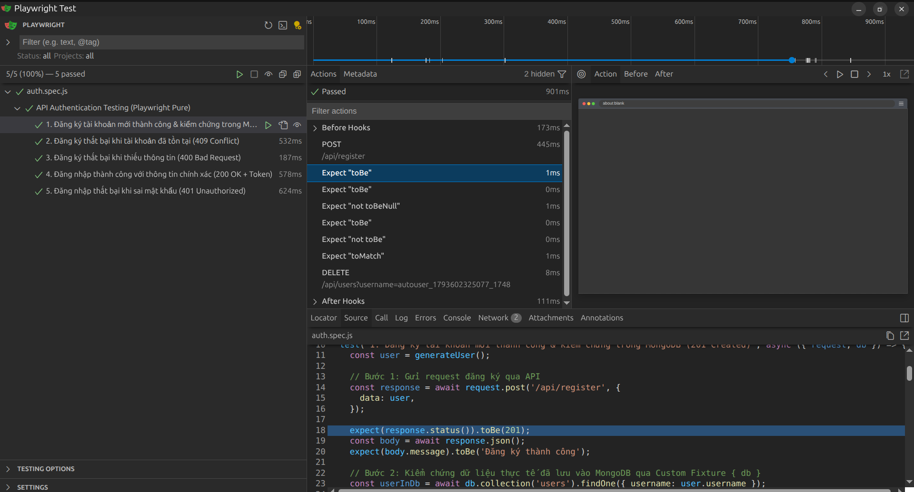

Thực chiến Thiết kế & Tối ưu cho Team Dev & Tester
(Nhấn phím mũi tên phải ➡️ hoặc Space để chuyển slide | Nhấn 'F' để xem toàn màn hình)
Scenario Outline.webServer tự khởi động backend.request API Client độc lập, cực nhẹ, siêu tốc độ!
webServer để bật backend lúc test.automation-test-training/
├── src/main.go # Golang Backend + MongoDB (Port 3000)
└── automation-test/
├── playwright/ # Code-first: Viết test bằng JS thuần
└── playwright-bdd/ # Behavior-first: Kịch bản Gherkin + StepsPOST /api/register — Đăng ký tài khoản (201 Created, 409 Conflict, 400 Bad Request)POST /api/login — Đăng nhập hệ thống (200 OK + Token, 401 Unauthorized)DELETE /api/users — Dọn dẹp dữ liệu kiểm thử (Reset data test)import { test, expect } from '@playwright/test';
test.describe('Nhóm API Authentication', () => {
// 1. Hooks: Vòng đời chuẩn bị & dọn dẹp
test.beforeEach(async ({ request }) => { /* Setup */ });
test.afterEach(async ({ request }) => { /* Teardown */ });
// 2. Test Case & Fixture { request }
test('Tên kịch bản kiểm thử', async ({ request }) => {
// 3. Gọi HTTP Request (POST, GET, ...)
const res = await request.post('/api/...', { data });
// 4. Assertions: Kiểm chứng kết quả
expect(res.status()).toBe(200);
expect(await res.json()).toHaveProperty('token');
});
});test.describe: Gom nhóm các test case có cùng tính năng/ngữ cảnh.beforeEach / afterEach: Hooks tự động chuẩn bị và xóa sạch dữ liệu test.{ request } Fixture: API Client độc lập do Playwright cung cấp, không cần mở Browser.expect(...): Bộ matcher mạnh mẽ kiểm tra HTTP Status, Response Body, Headers.import { test, expect } from '../fixtures/test.js';
test('1. Đăng ký tài khoản & kiểm chứng MongoDB (201 Created)', async ({ request, db }) => {
const user = generateUser();
// 1. Gọi API đăng ký
const response = await request.post('/api/register', { data: user });
expect(response.status()).toBe(201);
const body = await response.json();
expect(body.message).toBe('Đăng ký thành công');
// 2. Query trực tiếp MongoDB qua Custom Fixture { db }
const userInDb = await db.collection('users').findOne({ username: user.username });
expect(userInDb).not.toBeNull();
expect(userInDb.password).not.toBe(user.password); // Mật khẩu không phải plain-text
expect(userInDb.password).toMatch(/^\$2[aby]\$/); // Mật khẩu đã hash Bcrypt
// 3. Dọn dẹp sau test
await request.delete(`/api/users?username=${user.username}`);
});Phù hợp chạy tự động, tích hợp CI/CD pipeline:
npm test
# hoặc dùng npx linh hoạt:
npx playwright testXem timeline, soi request/response, time-travel:
npm run test:ui
# hoặc dùng npx:
npx playwright test --ui
Giao diện Playwright UI Mode: Soi chi tiết Timeline, Network Headers, Body & Dừng breakpoint code
{ request, db } chính là các Fixtures — tài nguyên được Playwright chuẩn bị sẵn trước khi test chạy và tự động dọn dẹp sau khi test xong.import { test, expect } from '@playwright/test';request, page).test.extend() để quản lý kết nối MongoDB.import { test, expect } from '../fixtures/test.js';{ db }// fixtures/test.js
import { test as base } from '@playwright/test';
import { MongoClient } from 'mongodb';
export const test = base.extend({
// Custom Fixture: Quản lý vòng đời kết nối MongoDB
db: async ({}, use) => {
// 1. SETUP: Mở kết nối trước khi test chạy
const client = new MongoClient('mongodb://localhost:27017');
await client.connect();
// 2. BÀN GIAO: Chuyển database cho test case sử dụng
await use(client.db('training_db'));
// 3. TEARDOWN: Tự động đóng kết nối khi test xong (dù Pass hay Fail)
await client.close();
},
});
export { expect } from '@playwright/test';"testuser".workers: 4, Test A vừa tạo user thì Test B gửi lệnh xóa ➔ Flaky test ngẫu nhiên!
const generateUser = () => ({
username: `autouser_${Date.now()}_${Math.floor(Math.random() * 10000)}`,
password: 'password123',
});👉 Chạy bao nhiêu luồng song song cũng không bao giờ đụng độ dữ liệu!
webServerĐừng bắt Tester hoặc CI/CD phải mở terminal gõ go run ./src!
// playwright.config.js
export default defineConfig({
use: {
baseURL: process.env.BASE_URL || 'http://localhost:3000',
extraHTTPHeaders: { 'Content-Type': 'application/json' },
},
// Tự động kiểm tra và khởi động Go Backend nếu chưa bật
webServer: {
command: 'cd ../.. && go run ./src',
url: 'http://localhost:3000/health',
reuseExistingServer: !process.env.CI,
timeout: 10000,
},
});✅ Chỉ 1 lệnh npm test: Tự bật Server ➔ Tự chạy Test ➔ Tự tắt Server!
Biến kịch bản kiểm thử thành tài liệu đặc tả nghiệp vụ chung
Feature: Xác thực người dùng (Authentication API)
Scenario: 1. Đăng ký tài khoản mới thành công
When người dùng gửi yêu cầu đăng ký với tài khoản "user1" và mật khẩu "pass123"
Then mã phản hồi HTTP phải là 201
And thông báo trả về phải là "Đăng ký thành công"
Scenario: 2. Đăng ký thất bại khi tài khoản đã tồn tại
Given có một tài khoản "user2" với mật khẩu "pass123" đã tồn tại
When người dùng gửi yêu cầu đăng ký với tài khoản "user2" và mật khẩu "pass123"
Then mã phản hồi HTTP phải là 409
And thông báo lỗi phải là "Tài khoản đã tồn tại"Kiến trúc Code-Generation (Transpiler) mang lại tốc độ thực thi tối đa
✍️ File .feature (Gherkin)
➔ [QA/Tester tự viết]
+
✍️ File .steps.js (Logic code)
➔ [Dev/Tester tự viết]
│
▼ Lệnh: npx bddgen
🤖 .features-gen/*.spec.js
➔ [MÁY TỰ SINH 100%]
│
▼ Lệnh: npx playwright test
🚀 Runner Native Siêu Tốc!
💡 Nếu thiếu step, npx bddgen sẽ in sẵn khung code (snippets) ra terminal để copy!
.feature (Nghiệp vụ):
.steps.js (Kỹ thuật):
.feature.expect). Do Dev/Tester viết..feature ➔ .steps.jsPlaywright BDD ghép nối câu chữ kịch bản sang hàm code thực thi như thế nào?
Scenario: 1. Đăng ký thành công
When người dùng gửi yêu cầu đăng ký
với tài khoản "user1"
và mật khẩu "pass123"
Then mã phản hồi HTTP phải là 201
And thông báo trả về phải là
"Đăng ký thành công"// "user1" & "pass123" tự động map vào {string} ➔ username & password
When('người dùng gửi yêu cầu đăng ký với tài khoản {string} và mật khẩu {string}',
async ({ request, apiContext }, username, password) => {
apiContext.response = await request.post('/api/register', {
data: { username, password },
});
});
// 201 tự động map vào {int} ➔ expectedStatus
Then('mã phản hồi HTTP phải là {int}',
async ({ apiContext }, expectedStatus) => {
expect(apiContext.response.status()).toBe(expectedStatus);
});"..." ➔ tự động khớp vào {string} và truyền làm đối số cho hàm.{int}. Số thực ➔ {float}.{ request, apiContext, db } luôn là Playwright Fixtures được tiêm vào tự động!
Sức mạnh lớn nhất của BDD: Dev viết 1 step, QA tự do lắp ghép ra vô số test case
auth.steps.js// 1. Step gửi API đăng ký tổng quát:
When('người dùng gửi yêu cầu đăng ký với tài khoản {string} và mật khẩu {string}',
async ({ request, apiContext }, username, password) => {
apiContext.response = await request.post('/api/register', {
data: { username, password },
});
});
// 2. Step kiểm tra HTTP Status tổng quát:
Then('mã phản hồi HTTP phải là {int}',
async ({ apiContext }, expectedStatus) => {
expect(apiContext.response.status()).toBe(expectedStatus);
});auth.feature# Kịch bản 1: Đăng ký thành công
When người dùng gửi yêu cầu đăng ký với tài khoản "u1" và mật khẩu "123"
Then mã phản hồi HTTP phải là 201
# Kịch bản 2: Tài khoản trùng lặp
When người dùng gửi yêu cầu đăng ký với tài khoản "u2" và mật khẩu "123"
Then mã phản hồi HTTP phải là 409
# Kịch bản 3: Thiếu thông tin
When người dùng gửi yêu cầu đăng ký với tài khoản "" và mật khẩu ""
Then mã phản hồi HTTP phải là 400.steps.js, tất cả các Scenario đều tự động cập nhật!
Scenario Outline: Tái Sử Dụng Cả Kịch BảnChạy cùng 1 kịch bản khuôn mẫu với nhiều bộ dữ liệu (Data-Driven Testing)
auth.steps.js (Step thông thường)// Dev KHÔNG cần viết thêm hàm mới nào!
When('người dùng gửi yêu cầu đăng nhập với tài khoản {string} và mật khẩu {string}',
async ({ request, apiContext }, username, password) => {
apiContext.response = await request.post('/api/login', {
data: { username, password },
});
});
Then('mã phản hồi HTTP phải là {int}',
async ({ apiContext }, expectedStatus) => {
expect(apiContext.response.status()).toBe(expectedStatus);
});
Then('kết quả phải chứa token {string}',
async ({ apiContext }, hasToken) => { ... });auth.feature (Scenario Outline)Scenario Outline: 4. Đăng nhập hệ thống
Given có một tài khoản "bdd_user" với mật khẩu "correct_password" đã tồn tại
When người dùng gửi yêu cầu đăng nhập với tài khoản "bdd_user" và mật khẩu "<password>"
Then mã phản hồi HTTP phải là <status_code>
And kết quả phải chứa token "<has_token>"
Examples:
| password | status_code | has_token |
| correct_password | 200 | true |
| wrong_password | 401 | false |
| | 400 | false |Scenario Outline! Playwright BDD tự động đọc từng dòng trong bảng Examples để tiêm thẳng giá trị vào các tham số {string}, {int} của các hàm step có sẵn.
let authToken; // DÙNG CHUNG CẢ MODULE
When('đăng nhập', async () => { authToken = res.token; });
// Khi chạy parallel, các test case ghi đè token của nhau!apiContext):
export const test = base.extend({
apiContext: async ({}, use) => {
// Mỗi Scenario nhận 1 context riêng biệt, hoàn toàn cô lập
await use({ username: '', response: null, responseBody: null });
},
});npx| Thao tác | Lệnh npx |
|---|---|
| Chạy toàn bộ test | npx playwright test |
| Bật UI Mode trực quan | npx playwright test --ui |
| Lọc 1 test case cụ thể | npx playwright test -g "Đăng ký" |
| Chạy từng bước (Debug Mode) | npx playwright test --debug |
| Xem báo cáo HTML chi tiết | npx playwright show-report |
| BDD: Biên dịch & chạy | npx bddgen && npx playwright test |
| Tiêu chí | Playwright Thuần | Playwright BDD |
|---|---|---|
| Người dùng chính | Dev, Automation QA | Manual QA, BA, Product Owner, Dev |
| Mục đích kiểm thử | API kỹ thuật, Microservices nội bộ | Luồng nghiệp vụ User Story, E2E flow |
| Chi phí bảo trì | Thấp (chỉ sửa code test) | Trung bình (duy trì cả .feature và .steps) |
| Tài liệu & Báo cáo | Code-oriented | Nghiệp vụ trực quan, thân thiện cho sếp |
username="testuser", password="".400 Bad Request kèm thông báo "Username và password không được để trống".
Mở auth.feature, viết Scenario mới bằng Gherkin.
Chạy npx bddgen kiểm tra mapping và thực thi test!
Cảm ơn mọi người đã tham gia buổi chia sẻ!
Toàn bộ source code mẫu và tài liệu có sẵn trong repo:
automation-test-training/